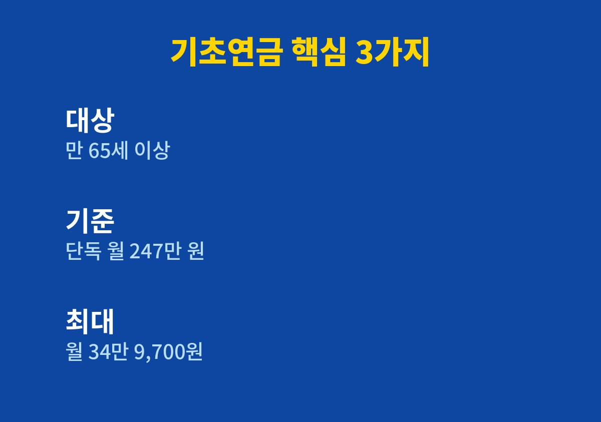

만 65세가 되었거나 곧 되는 부모님을 둔 분, 그리고 본인이 해당되는 분이라면 아래 순서대로 확인하면 된다.
2026년 11월 기준으로 내가 찾아보며 정리한 내용이다.
가족과 이야기하다 부모님이 기초연금을 받고 계신지 궁금해져서 하나씩 찾아보았다.
제도의 기준은 해마다 바뀌기 때문에 숫자를 먼저 확인하는 것이 도움이 된다.
기초연금은 어르신의 생활 안정을 돕기 위해 매달 지급되는 공적 제도다.
국민연금처럼 보험료를 낸 기간으로 금액이 정해지는 연금과는 성격이 다르다.
소득과 재산이 일정 기준 이하인 어르신이 대상이라는 점이 핵심이다.
나이가 되면 자동으로 지급된다고 생각하는 경우가 의외로 많다.
하지만 본인이 직접 신청해야 지급이 시작되는 방식으로 안내되어 있다.
부모님이 신청 시기를 몰라 그냥 지나치는 일이 생길 수 있다는 점이 마음에 걸렸다.
연금이라는 이름 때문에 이미 다른 연금을 받는 분은 해당되지 않는다고 오해하기도 한다.
실제로는 다른 소득과 함께 합산해 기준을 따지기 때문에 직접 조회해 보는 것이 정확하다.
나 역시 부모님 이야기를 꺼내기 전까지는 신청 방식을 제대로 몰랐다.
기본 조건은 만 65세 이상이면서 소득인정액이 선정기준액 이하인 것이다.
2026년 선정기준액은 단독가구 기준 월 247만 원으로 보도되었다.
소득인정액은 월급 같은 소득만이 아니라 재산을 월 소득으로 환산한 금액까지 더해 계산한다.
그래서 소득이 적어도 재산이 많으면 기준을 넘을 수 있다.
부부가 함께 받는 경우의 기준액은 단독가구와 다르게 적용된다.
다만 부부가구의 선정기준액은 내가 공식 공고에서 직접 확인하지 못했다.
그래서 이 부분은 복지로 모의계산이나 주민센터 안내로 확인해야 한다.
2026년 기준연금액은 월 34만 9,700원으로 정리한 자료가 많았다.
이 금액은 최대 기준이며 소득과 재산에 따라 실제 지급액은 달라질 수 있다.
부부가 함께 받으면 감액이 적용되어 월 55만 9,520원으로 안내하는 자료도 있었다.

| 항목 | 확인된 내용 |
|---|---|
| 대상 | 만 65세 이상, 소득인정액이 선정기준액 이하 |
| 선정기준액 | 단독가구 월 247만 원 |
| 기준연금액 | 월 34만 9,700원(최대 기준) |
| 신청 시기 | 만 65세 생일 한 달 전부터 |
| 신청처 | 주민센터, 복지로 |
표에는 여러 자료에서 공통으로 확인된 숫자만 담았다.
개인별 정확한 금액은 소득과 재산을 조회한 뒤에 정해진다.
신청은 가까운 주민센터를 방문하거나 복지로를 통해 할 수 있다고 안내되어 있다.
신청 시기는 만 65세 생일이 속한 달의 한 달 전부터 가능한 것으로 정리되어 있다.
미리 알아 두면 생일에 맞춰 지급이 시작되도록 준비하기 쉽다.
1. 부모님의 만 65세 생일 시점을 달력으로 확인한다.
2. 복지로 모의계산 등으로 대략의 소득인정액을 가늠해 본다.
3. 신분증과 통장 사본 등 기본 서류를 준비한다.
4. 주민센터 방문 또는 복지로로 신청서를 제출한다.
5. 결과 통지를 받고 지급 계좌와 시작 시점을 확인한다.
필요 서류는 가구 상황에 따라 달라질 수 있어 방문 전에 전화로 확인하는 편이 좋다.
자녀가 부모님 대신 알아볼 때에도 개인정보는 필요한 범위에서만 다루어야 한다.
대행을 해 주겠다며 수수료를 요구하는 곳은 조심해야 한다.
공식 신청은 별도 비용 없이 공공기관에서 하는 것이다.
정리하면 기초연금은 나이만이 아니라 소득과 재산까지 함께 보는 제도다.
기준 숫자는 매년 바뀌므로 신청 직전에 다시 확인하는 것이 안전하다.
이 글이 부모님 연세가 가까워진 가정에 작은 점검표가 되었으면 한다.
※ 2026년 11월 기준 공개된 정보를 정리한 글이며, 정확한 대상 요건·금액·신청 기간은 복지로·정부24·관할 주민센터의 공식 공고를 확인하시길 바란다.